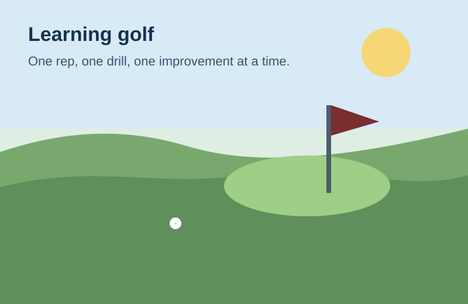

One of my interests is learning golf. I like it because progress is measurable, the skill ceiling is high, and small technical changes can make a big difference over time.

This embedded YouTube lesson is about the fundamentals of a golf swing.
This Tableau dashboard tracks golf performance metrics like score, fairway percentage, greens in regulation, and putts per GIR.